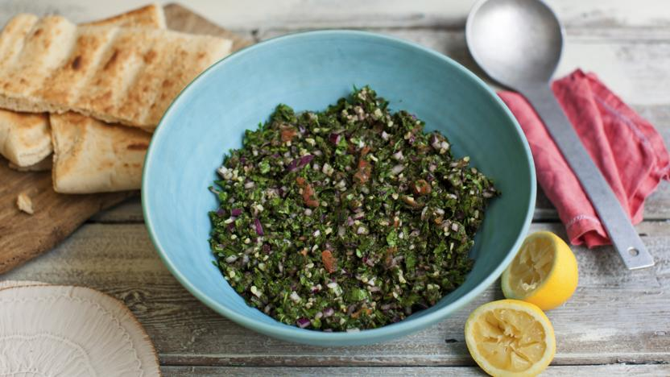

INGREDIENTS
- 500 Grams of parsley
- 1 cucumbers
- 1 Tomato
- 4 green onion
- Rough bulgur 1/3 cup
- green mint 1/4 cup
- olive oil 1 cup
- Lemon juice 4 cups
- White vinegar
- Salt
- black pepper
- lettuce
- cabbage leaves
Preparation
- cut the parsley
- Cut the tomato, onions and cucumbers into very small pieces
- Put the bulgur In warm water for 30 minutes
-
add mint, olive oil, Lemon juice, vineger, salt, and pepper then mix
them.
- Refrigerate for at least 30 minutes before serving
- add some lettuce or cabbage leaves and serve